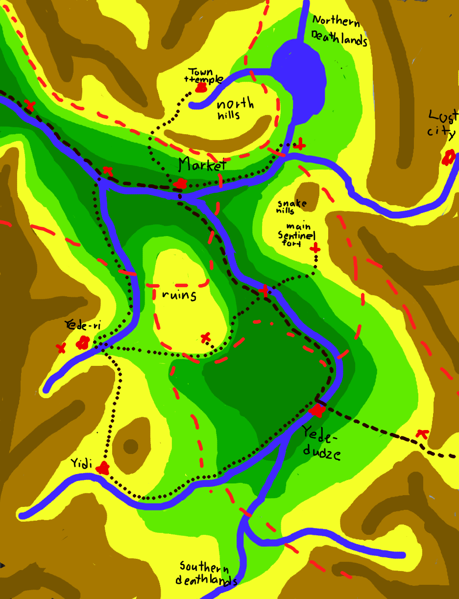

Overview of the Kingdom
Note: I'm trying out a new transliteration approach as compared to previous things I published. You can see some of them on my blog and also in my published adventure In The Land of the Dead God. It assumes you've read the Overview blog post, if not the published adventure.
The following map shows an overview of the region, broken down into 6 sub-regions described below:
Northern river (Luné-ni) region and Market Town (Yeyédé-hogo)
This is where the adventure "In The Land of the Dead God" is set. I'll probably make a more open ended location supplement as well.
Aside from the market town, it is quite sparsely populated. The main industry is trade, both trade itself and protecting merchants. Merchants typically travel along the path marked by Sentinel outposts, sheltering from predatory animals, sell their supplies at the market, and then turn back. Trade has brought a great deal of wealth to the area.
There are relatively few bandits in this area, but also few herders. Most food is imported or brought down from Ni-nem̃u, the breadbasket (meat basket? egg basket?) of the northern part of the area. The biggest threat is large predatory dinosaurs. The Sentinels try and protect travelers from these, but can only do so much.
Before the cataclysm, this was a border area full of both agriculture and the infrastructure of war. There are many ruins, especially in the nearby hills just to the south (the ones in "In The Land of the Dead God"). The organization known as the Infinite Scroll, operating out of the market town, sponsors academic excavations of the ancient ruins in order to better understand the old Tuje empire. These attempts are stymied by unscrupulous merchants raiding these dungeons, selling artifacts they don't understand to wealthy collectors.
Ni-ném̃u (north hills) region
This is probably where the next major adventure will be.
This area was not hit as hard by the cataclysm, and large predators are less prevalent. Its main industries are around the herding of domesticated dinosaurs, and travelers through the region are less likely to end up here. Adventures here will probably be a bit more socially focused and political than those than elsewhere, and I'll need to flesh out the society here a bit more.
A major town here contains one of the few surviving, continuously operating temples in the region. And while the god may be dead the religion is a bit more than just the god.
The temple itself and the Old Town around it has some magically enforced taboos around violence and you cannot enter unless you have not killed another living creature in the last year and a day. This is enforced through magic, and the priests of the region believe that adherence to this rule had protected the hills from the cataclysm to a degree.
This is also quite inconvenient for the Sentinels, who usually find themselves occasionally having to kill some dangerous dinosaur; the people who live in the area, who mostly live off of herds of animals since agriculture is now basically impossible; and likely the player characters. As a result, a New Town has sprung up around the Old Town, and it's common to have to deal with the local political powers through intermediaries.
There might also be an interesting adventure here approaching the problem from the other side, where the party has to avoid violence to succeed.
There are other survivors of the cataclysm - the orcs - who originally came from over the mountain ridge. They also herd dinosaurs in the area and are culturally distinct from the Tujé, but on friendly terms.
Great rocks river (Luné-yenuzu), the Lost City, and the Northern Deathlands
This is a place to visit when at a higher level once players are more invested in the region, and would probably be a more conventional point/dungeon crawl. Traveling up the river will allow the party to reach a long-isolated series of settlements (the Lost City) that were cut off from the outside world for many centuries. This would reveal some new and surprising knowledge about the ancient kingdom, to be determined later. An expedition to the Northern Deathlands might be the culmination of this mini-campaign, where the party ventures into what was once the greatest city of this region but where no living thing has set foot in centuries.
The sentinels in the Snake Hills (Gusa-ném̃u) and the trip between the two towns
The river passes through a canyon flanked by two groups of hills. Above the river, the main danger in the hills are creatures that live there. The Sentinels have their main fort here and this is where new recruits first train.
They also maintain a fort halfway between the two towns, and in the other set of hills. The hills to the south of the Market, as mentioned, contain many dangerous ruins, and the Sentinels want to make sure nobody unleashes some ancient danger there.
This route, between the two major cities, is the most important to those who actually live here, and the one that the Sentinels make the most effort to maintain.
East mountain pass, Yédé-dudzé and surrounding areas
This is the final leg of the route through this valley. The town of Yédé-dudzé is the last stop before heading through the eastern mountain pass, full of bandits and outlaws, and outside of the land of the Tujé per se. Exile being a common punishment for more serious crimes in Tujé society, dangerous criminals often end up here, and defeated NPCs might make a reappearance.
Goods in the town are usually sold to merchants who specialize in making this dangerous trip, sometimes by paying off the bandits. The Sentinels maintain an outpost here to maintain control of the main mountain pass but have no ability to do anything about the bandits.
This town is smaller, most of the time, but is a center for a larger population: the plains to the northwest support herds of dinosaurs, both tame and wild, and the people who live off of them. The Sentinel tower in the hills above the plains tracks any particularly large threats to the herders.
The herds here are different from those in the north hills, which I haven't figured out yet.
Yédé-ri, Yédé-yidi and the Southern Deathlands
The known world of the Tujé is bounded on the south by another area of magical devastation in which nobody travels, but it is of less immediate interest because there are no known city ruins in that direction.
There are the final two towns here, both more isolated, and, aside from growing food and some mining, less economiocally active. Very rarely do travelers have a reason to come here, and probably an adventure here would be somewhat higher level.
Somewhat recently, these two towns were at war. The Sentinels, as a nominally politically neutral third party, brokered a very fragile peace. Yede-ri is trying to reconstruct itself - after the death of the old leader the leadership is weak and the danger that one faction or another restarts the war is looming. The Sentinels have become more involved than they are supposed to in holding the city together.
Yédé-yidi, conversely, has essentially cut itself off from the rest of Tujé society. Now ruled by an autocratic ruler, it is probably unwise to visit. However, for someone exiled from the land, since Yédé-yidi is no longer in communication with other settlements, this town could provide a safe shelter.
I do want to write something set here, but probably later on - any adventure here would be heavy on politics and probably have a different, somewhat darker tone than the rest of the setting.